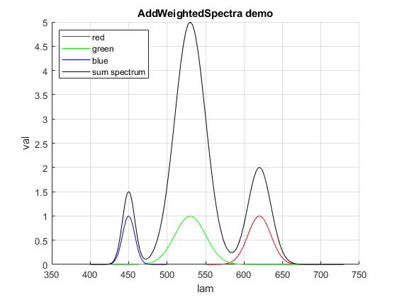

AddWeightedSpectra
Navigate to: Home | Alphabetic list | Grouped list | Source code: AddWeightedSpectra.m
Adds several spectra with weights, properly interweaving the wavelengths
Contents
Syntax
function rv = AddWeightedSpectra(spectra,weights)
Input Arguments
- spectra: scalar, 1-D vector or 1-D cell array of valid spectra (see SpectrumSanityCheck)
- weights: scalar or 1-D vector of double
Output Arguments
- rv: Spectrum containing the merged wavelengths in field rv.lam, and the weighted sum of all input spectra in field rv.val
Algorithm
Computes the weighted sum of all spectra. When spectra do not overlap, the wavelength ranges are concatenated, and the range in between is padded with zero. If they do overlap, then rv.lam contains all values from all input spectra, with duplicate values removed, and what is added are the weighted sum of linearly interpolated values from all input spectra. Thus, the sum spectrum is a perfect model of the underlying continuous function which is the weighted sum of the continuous, linearly interpolated input spectra.
See also
AddSpectra, MultiplySpectra, ScaleSpectrum
Usage Example
function ExampleAddWeightedSpectra() red = GaussSpectrum(linspace(550,700),620,15); green = GaussSpectrum(linspace(430,730),530,20); blue = GaussSpectrum(linspace(400,500),450,8); sumspec = AddWeightedSpectra([red, green, blue],[2, 5, 1.5]); clf; hold on; plot(red.lam, red.val,'r'); plot(green.lam, green.val,'g'); plot(blue.lam, blue.val,'b'); plot(sumspec.lam, sumspec.val,'k'); legend({'red','green','blue','sum spectrum'},'Location','NorthWest'); grid on; xlabel('lam'); ylabel('val'); title('AddWeightedSpectra demo'); error('fff'); end